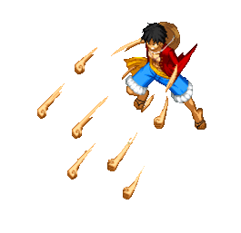

Monkey D. Luffy
Monkey D. Luffy is the main protagonist of the series. He is a pirate with the dream of becoming the Pirate King.
One Piece is a Japanese manga series written and illustrated by Eiichiro Oda. It has been serialized in Shueisha's Weekly Shōnen Jump magazine since July 1997.
Monkey D. Luffy is the main protagonist of the series. He is a pirate with the dream of becoming the Pirate King.
Roronoa Zoro is a skilled swordsman and a member of the Straw Hat Pirates. He aims to become the world's greatest swordsman.
Nami is the navigator of the Straw Hat Pirates. She dreams of creating a map of the entire world.
Sanji is the cook of the Straw Hat Pirates. He dreams of finding the All Blue, a legendary sea where all ingredients can grow and be found.
The first episode introduces us to the world of One Piece and its main protagonist, Monkey D. Luffy. We see Luffy's determination to become the Pirate King as he sets out to find a crew and the legendary One Piece treasure.
A major turning point in the series where Luffy and his crew face off against a powerful enemy, Crocodile, in the Alabasta arc. This episode showcases intense battles and the determination of the Straw Hat Pirates to protect their friends.
An emotional episode where the Straw Hat Pirates reunite after a long separation caused by the events at Sabaody Archipelago. Each member has undergone significant growth and training during their time apart.